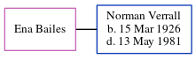

Catherine Sprat (née Tayler)
[ Home ] | [ Calendar ] | [ Surnames Index ] | [ Errors ] | [ Family History ]Catherine Tayler was the 5 times great-grandmother of Nigel Horne and married James Sprat (with whom she had 3 children: Mary, James and Ann) in St Lawrence, Thanet, Kent, England on 12 Oct 17551.
Children
- Mary was born c. 1758
- James was born c. 1761
- Ann was born c. 1763
Citations
- England Marriages 1538-1973 - Findmypast
Media
England Marriages 1538-1973 - R_847897944/2
Family Tree
Map
Generated by ged2site. Last updated on Jul 3, 2024